輕量級學術與營運策略畫布
Academic BMC & SWOT Web App
這是一個利用 Google Sheets 作為資料庫、透過 Google Apps Script (GAS) 部署的輕量級網頁應用程式。專為需要頻繁調整專案策略、管理核心設施或實驗室營運的研究人員設計。
✅ 免架設伺服器
✅ 直覺修改
✅ 完全自訂標題
✅ 學術友善匯出
🚀 圖文並茂部署教學 (1 分鐘完成，保證成功)
步驟一：建立資料庫與程式碼 (一鍵複製)
點擊下方按鈕，將內建程式碼的資料庫範本複製到你的 Google 雲端硬碟：
📥 一鍵複製 Google Sheet 專屬範本
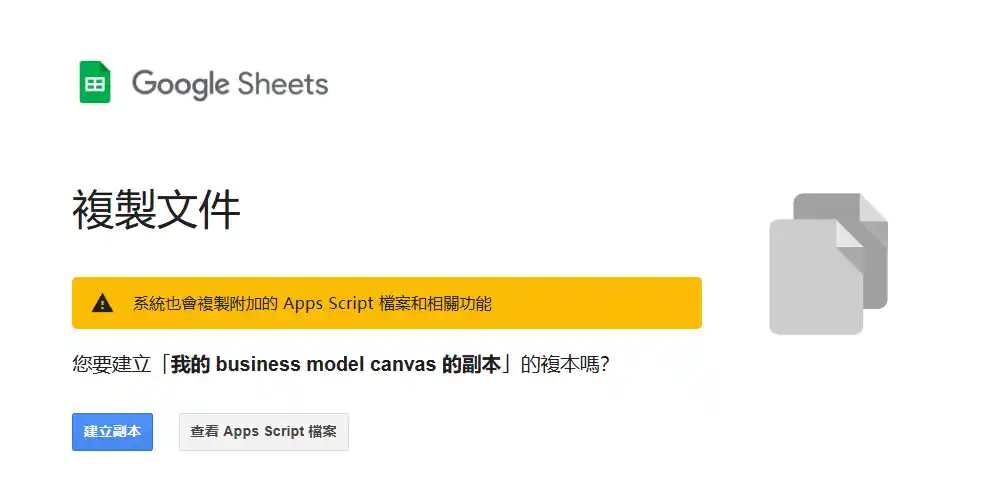
💡 複製完成後，你可以隨意修改試算表中 C 欄 (Title) 的標題文字，打造你專屬的畫布欄位。
💡 在這邊不用編輯 B欄 (content) 的內容，我們等步驟三發佈後，直接在網頁上填寫。
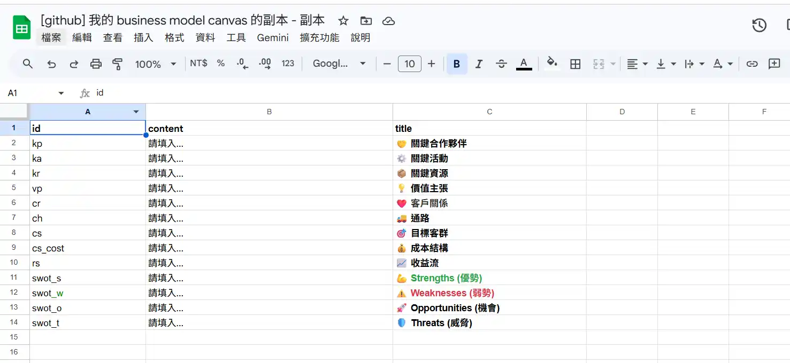
步驟二：發布網頁應用程式 (完整圖文教學)
- 在複製好的試算表上方選單，點擊 「擴充功能」 > 「Apps Script」。你會看到程式碼已經由範本自動為你準備好了！
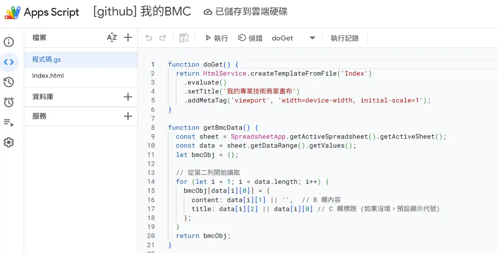
- 請點擊右上角藍色的 「部署」 > 「新增部署作業」。
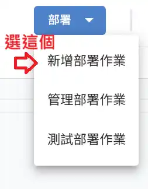
- 點擊左上角的齒輪圖示，選取 「網頁應用程式」，並簡單寫個記錄。
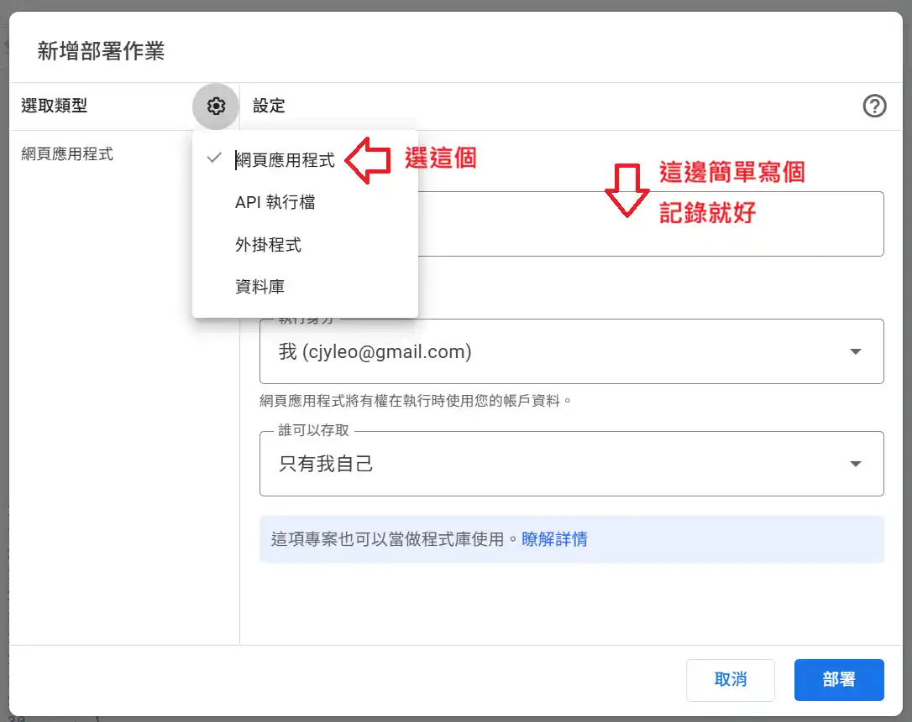
- 將 執行身分 設為「我」，誰可以存取 設為「只有我自己」(這樣才能保護你的資料隱私)，然後點擊 「部署」。
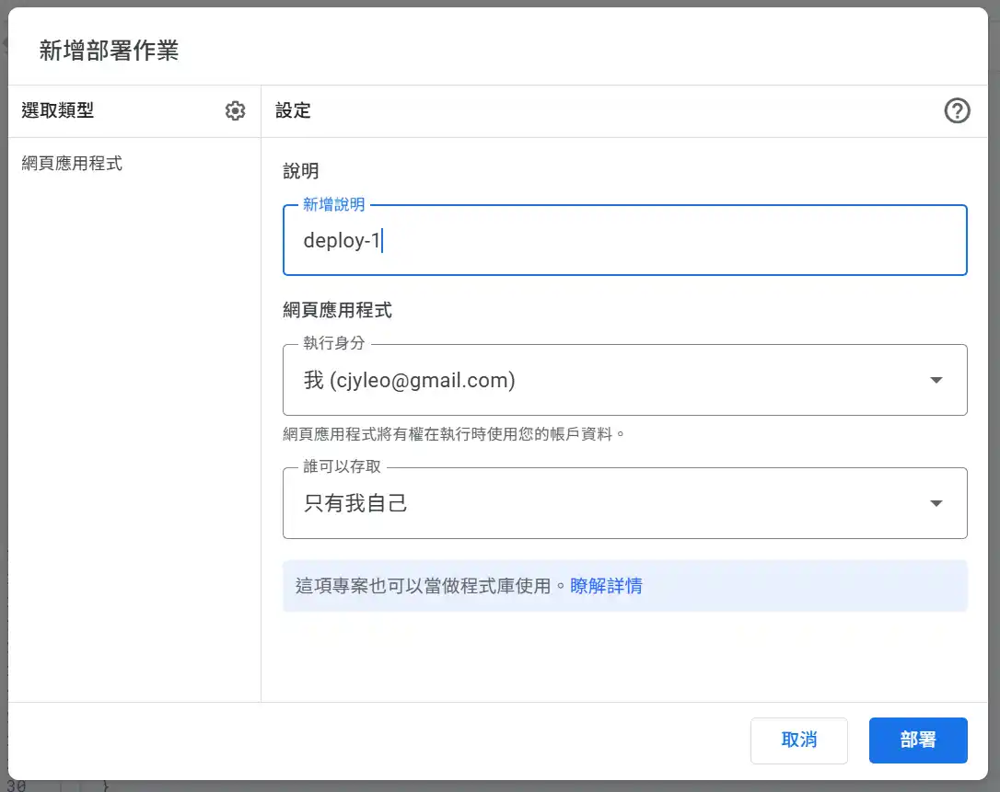
- 【首次授權教學】系統會要求授權，請點擊 「授予存取權」。
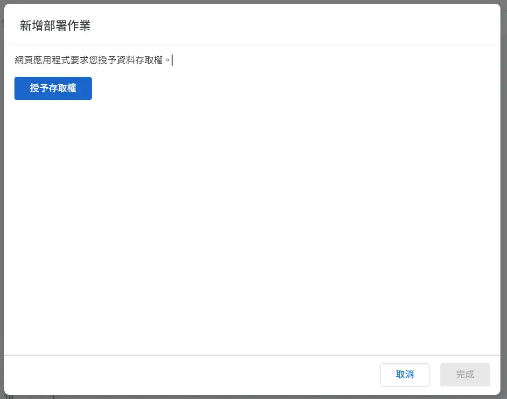
- 若出現紅色的安全警告，請不用擔心（因為這是你自己部署給自己用的程式碼）。點擊左下角的 「Advanced (進階)」。
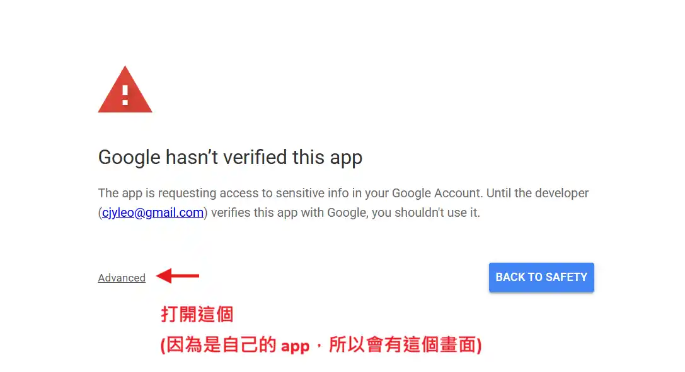
- 接著點擊最下方的 「Go to [專案名稱] (unsafe)」 繼續。
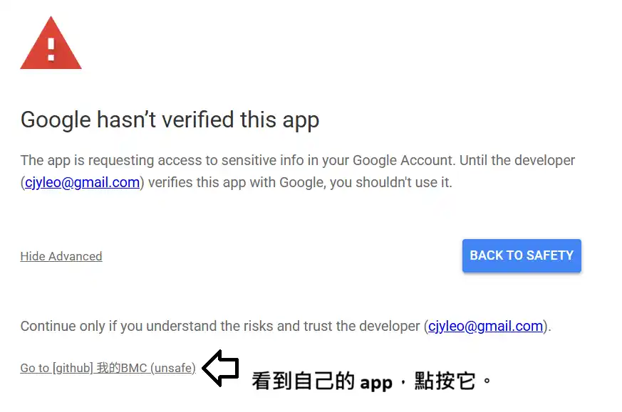
- 勾選「Select all」允許存取權限，然後點擊 「Continue (繼續)」。
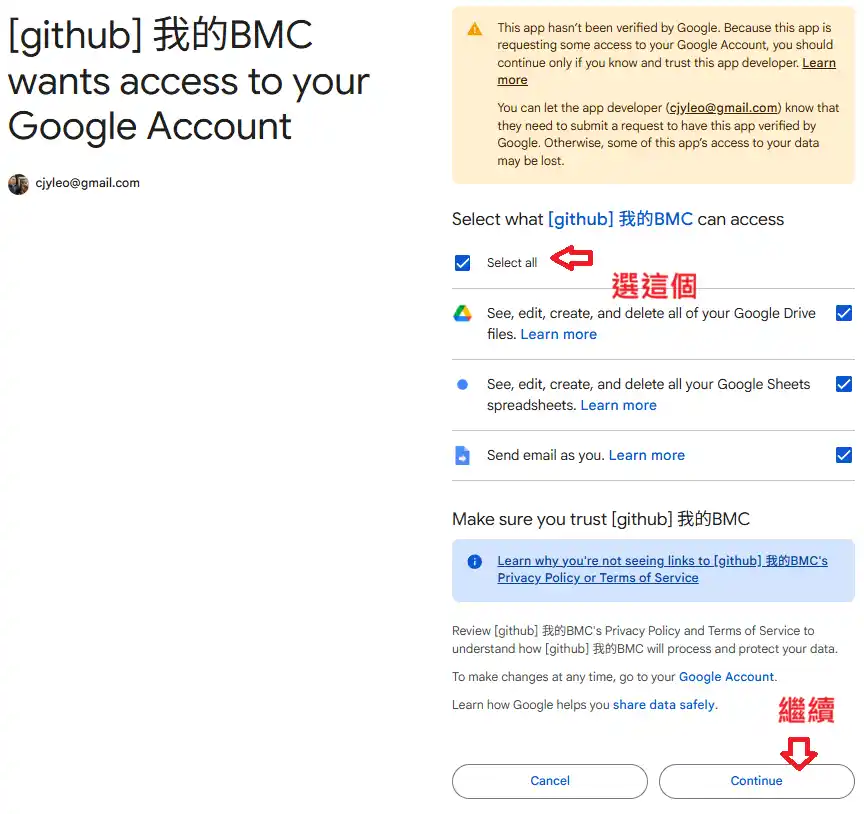
- 🎉 恭喜！看到這個畫面代表部署成功，請複製下方產生的網址，這就是你專屬的策略畫布連結！
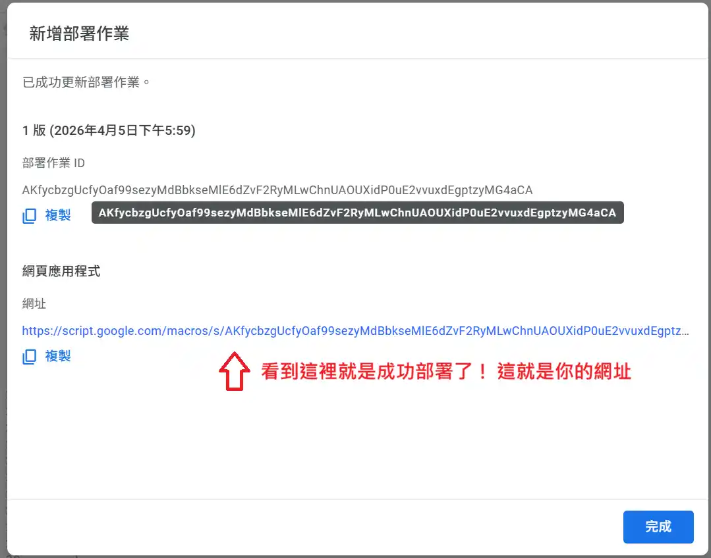
- 接下來，就可以直接在 web app 上編輯自己的 business model canvas 囉~
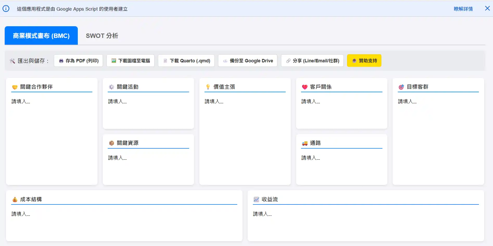
❤️ 支持這個專案
如果這個畫布工具幫助你釐清了實驗室的營運方向，或節省了你整理計畫書的時間，歡迎透過以下方式支持我的持續開發與研究：
☕ 1. 贊助支持 (Sponsor This Project)
開發與維護開源工具需要投入許多業餘時間。如果你覺得工具好用，歡迎給我一點鼓勵！
📄 2. 學術引用 (Citation)
身為生醫研究人員，若你在研究或設施管理中使用了本工具，或對單細胞轉錄體 (scRNA-seq)、Nanopore 定序有興趣，歡迎一起討論。
⚠️ 免責聲明 (Disclaimer)
本專案為開發者基於個人興趣於非工作時間所開發之開源輔助工具，與所屬之研究機構或任職單位無關。
專案採「現狀 (as-is)」提供，開發者與所屬機構不承擔系統維護、資料保管或任何直接/間接損害之背書與賠償責任。使用者應自行妥善保管其匯出之資料與策略機密。